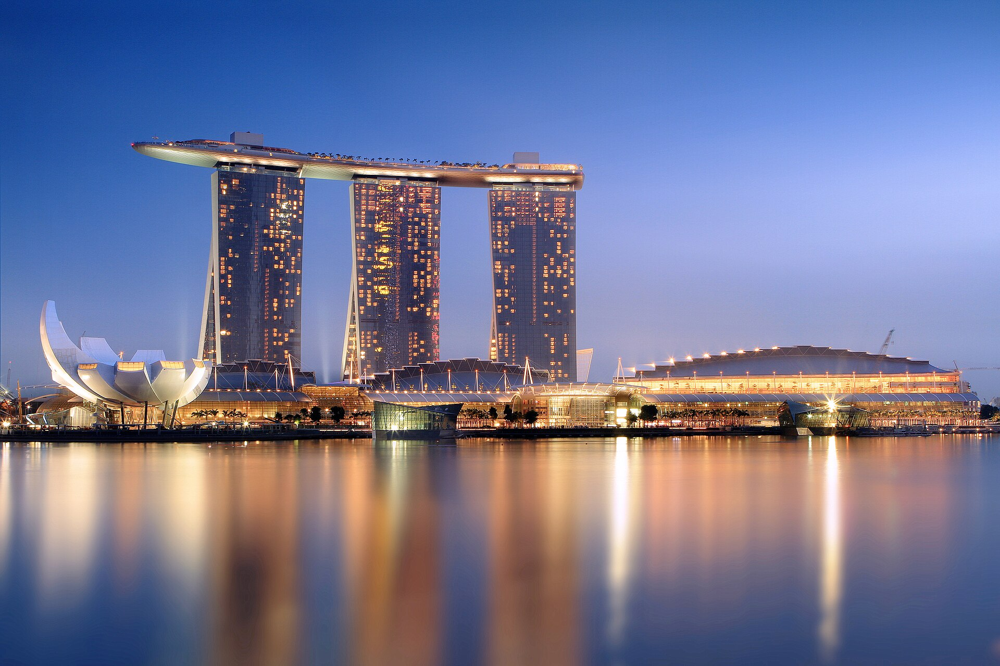
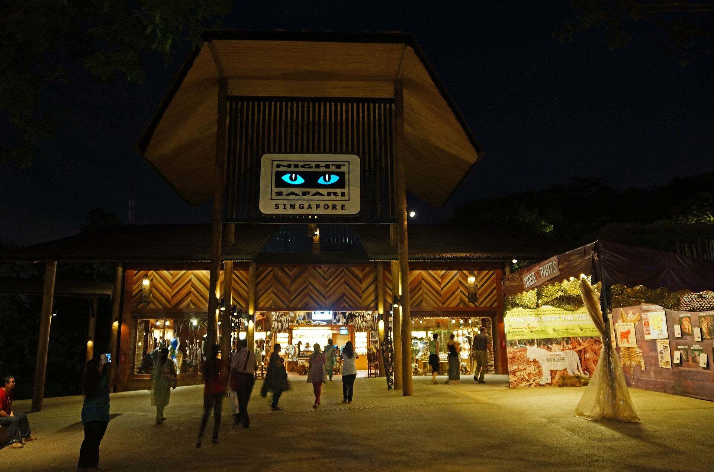
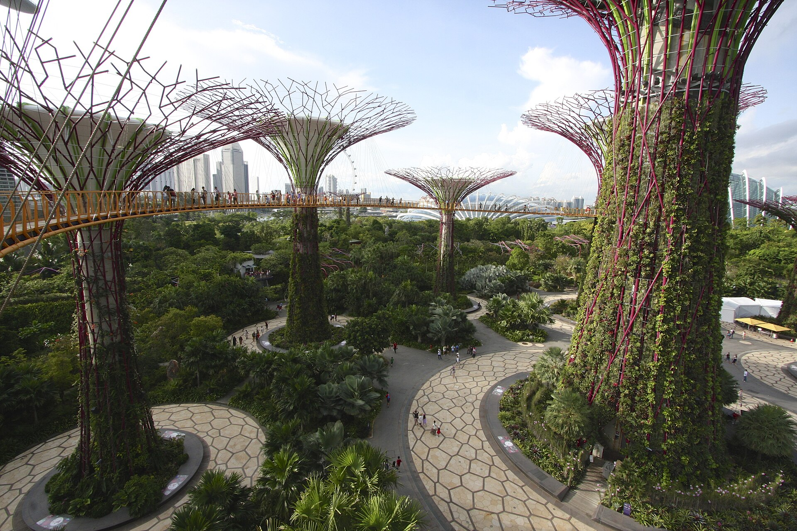
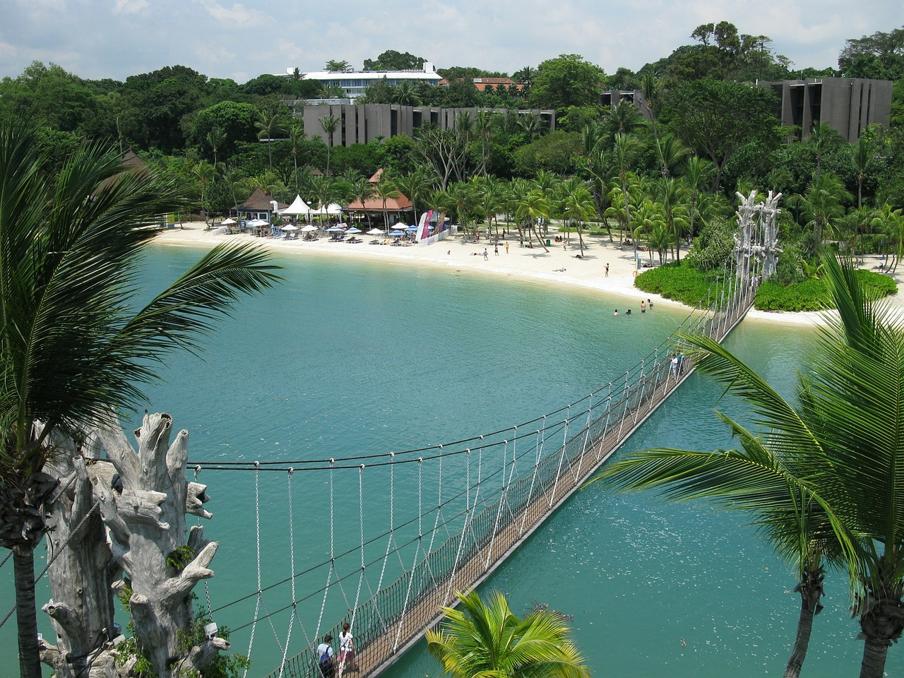

観光名所

マーライオン公園
マーライオン公園は、かの有名な「マーライオン像」があるウォーターフロントの公園です。また、SPECTRA – 光と水のシンフォニーという無料で見ることができる噴水ショーもおこなっていて写真撮影にもってこいのおすすめスポットです。

マリーナベイ・サンズ
マリーナベイ・サンズは世界最大級の最高級統合型リゾートです。3つの巨大な客室タワーの屋上を繋ぐ巨大な船型のプールであるインフィニティプールからの景色は圧巻です。シンガポール最大級のカジノや56階にある展望デッキであるサンズ・スカイパークも楽しむことができます。

ナイトサファリ
ナイトサファリは毎日18:00～00:00にだけ開園する動物園です。900匹以上のさまざまな夜行性動物に会うことができます。専用のトラムという乗り物に乗ったり4つの遊歩道コースを歩いたりさまざまな楽しみ方があります。暗闇の中で活動する野生動物たちの姿を間近で観察するという貴重な体験ができます。

ガーデンズ・バイ・ザ・ベイ
ガーデンズ・バイ・ザ・ベイは広大な近未来型植物園です。総面積約101ヘクタールの敷地に、世界中から集められた数々の植物と、最先端のテクノロジーを駆使した巨大な人工建造物が魅力です。18本の特徴的な形をした人工の木「スーパーツリー」や全面ガラス張りの巨大な大小ドームが2つは圧巻です。

セントーサ島
セントーサ島はシンガポール本土の南側に位置する人気の南国リゾートアイランドです。「ユニバーサル・スタジオ・シンガポール」や大型水族館「シンガポール・オーシャナリウム」などの施設や人工の白砂が美しい3つのビーチなど魅力満載です。